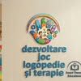
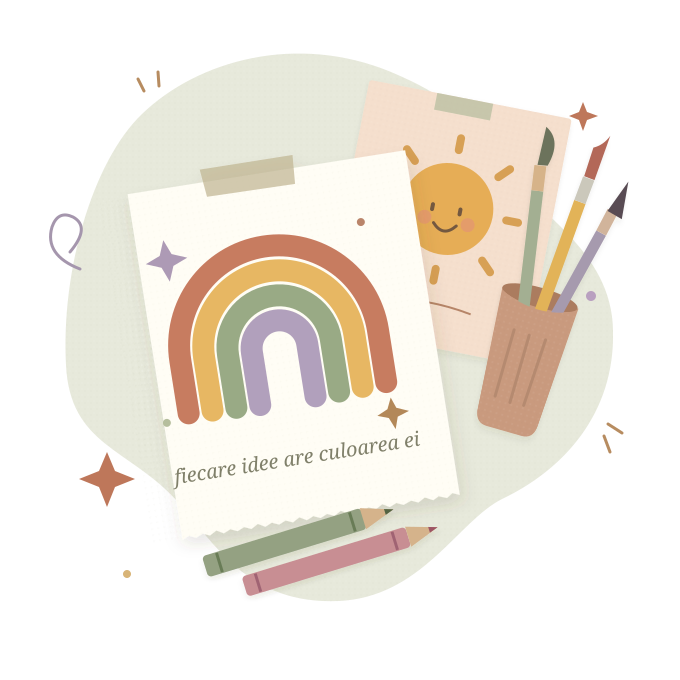

CULOARE & IMAGINAȚIE
Micul atelier de creație
Pictură, colaj și modelaj. Idei care prind formă, fără grija unui rezultat „perfect”.
Format propus · 60 min↗

smart terapy educationalSMART TERAPY EDUCATIONAL
Terapie pentru copii, logopedie și ateliere creative.
Comunicare, autonomie și învățare prin joacă,
în ritmul fiecărui copil.
Mai multă curiozitate.
Mai mult loc pentru a fi tu.

aici crescBUN VENIT LA SMART TERAPY EDUCATIONAL
O pată de culoare poate fi începutul unei povești. O bucată de lut, o idee care prinde formă. Iar un joc, o ocazie de a descoperi ceva nou.
Smart Terapy Educational aduce împreună terapia pentru copii, logopedia și învățarea prin joacă. Alături de serviciile de terapie, descoperim lumea prin ateliere creative și activități pentru școli și grădinițe, inclusiv în programul „Școala Altfel”.
Cunoaște-ne pe InstagramSPRIJIN PENTRU FIECARE PAS
Comunicare, autonomie, emoții și relații.
Servicii adaptate nevoilor fiecărui copil.
De la logopedie și comunicare prin imagini, la joacă, explorare senzorială și abilități sociale. Împreună cu echipa, discutăm nevoile copilului și pașii potriviți pentru el.
Scrie-ne pentru o discuție inițială. Obiectivele, formatul, frecvența și tariful ședințelor se stabilesc direct cu echipa.
MICILE MÂINI, ÎN ELEMENTUL LOR
Idei de ateliere pentru minți curioase.
Formatul se stabilește împreună cu echipa.
Programe propuse — disponibilitatea, vârstele și detaliile se confirmă pe Instagram.
Pictură, colaj și modelaj. Idei care prind formă, fără grija unui rezultat „perfect”.
Texturi, forme și povești despre emoții. Joacă senzorială și spațiu pentru exprimare.
Un proiect creativ făcut în doi. O pauză de la grabă, cu joacă și amintiri de luat acasă.
PENTRU ȘCOLI & GRĂDINIȚE
O zi în care întrebările sunt binevenite, mâinile sunt ocupate, iar imaginația are loc în orar.
Propunem ateliere creative adaptate temei clasei. Vârsta copiilor, materialele, locația și calendarul se discută cu echipa înainte de confirmare.
DE LA „NE-AR PLĂCEA” LA „HAI!”
Alege o idee de atelier și spune-ne vârsta copiilor, numărul participanților și perioada.
Echipa confirmă activitatea, locația, materialele necesare și oferta finală.
După confirmarea directă a programării, aventura poate începe.
TARIFE PENTRU ATELIERE
Estimări pentru activitățile creative.
Tarifele de terapie se discută cu echipa.
Tarife orientative propuse, neconfirmate de Smart Terapy Educational. Programele și prețul final se stabilesc direct cu echipa. Valorile de mai jos nu reprezintă o ofertă fermă sau o rezervare.
60 min · grup propus de 6–20 copii
55 lei / copil / atelier
60 min · grup propus de 6–20 copii
60 lei / copil / atelier
60 min · grup propus de 15–30 copii
45 lei / copil / atelier
75 min · grup propus de 6–15 perechi
85 lei / pereche / atelier
Propunerea include materialele creative de bază. Deplasarea, spațiul și cerințele speciale se cotează separat, dacă este cazul. Pentru 4 ateliere, calculatorul aplică o reducere propusă de 10%.
HAI SĂ FACEM UN MIC CALCUL
Alege formatul și numărul de participanți la atelier. Vei obține o estimare și un mesaj de trimis echipei pe Instagram.
Alegerile se păstrează doar în acest browser.55 lei / copil / atelier
12 copii · 1 atelierMesajul nu se trimite automat. Lipește-l în conversația cu echipa. Programarea și tariful devin valabile numai după confirmarea acesteia.
POATE TE ÎNTREBI…
Ai o altă întrebare?
Ne găsești pe Instagram.
Activitățile se pot gândi diferit pentru preșcolari și școlari. Spune echipei vârstele copiilor, pentru a confirma un format și materiale potrivite grupului.
Locația și aria de deplasare se confirmă direct cu Smart Terapy Educational. Pentru o activitate în școală sau grădiniță, include localitatea și spațiul disponibil în mesaj.
Primul pas este o discuție cu echipa despre nevoile copilului. Obiectivele, tipul intervenției și frecvența ședințelor se stabilesc individual. În secțiunea Terapii găsești toate cele nouă servicii prezentate.
Calculatorul este destinat atelierelor creative și programelor de grup, pe baza unor tarife orientative propuse. Pentru terapie și logopedie, cere direct echipei detalii despre ședințe și tarife. Disponibilitatea și prețul final se confirmă înainte de programare.
Pentru terapie, scrie direct echipei. Pentru ateliere, poți copia și mesajul din calculator. Ne găsești la contul @smart_terapy_educational pe Instagram. Adaugă perioada dorită, vârsta participanților și localitatea. Nu trimite informații medicale sau date sensibile în cererea inițială.
PRIMUL PAS ÎNCEPE CU „BUNĂ!”
Pentru terapie, logopedie sau un atelier plin de curiozitate.
Scrie-ne și povestește-ne ce vă doriți pentru copilul sau grupul vostru.